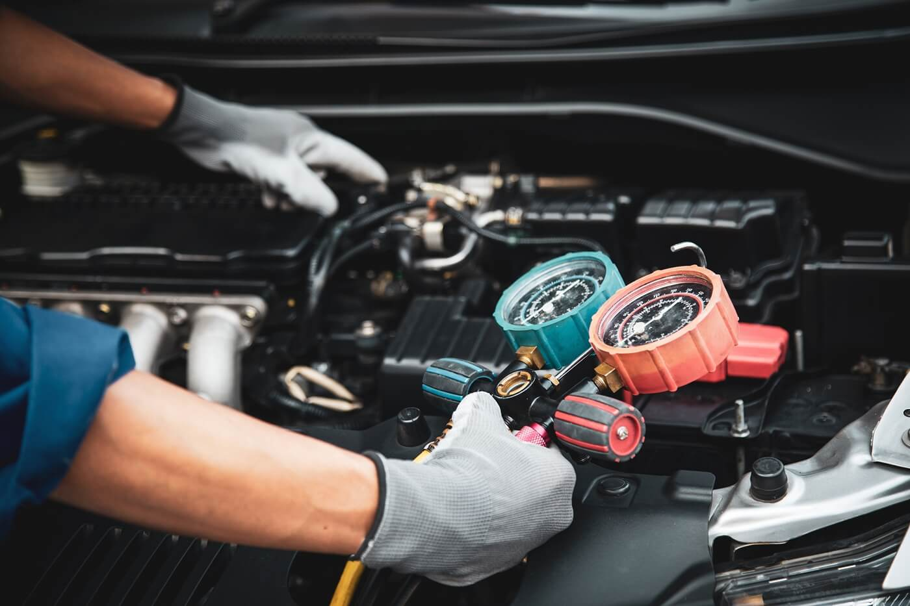

Mejor enfriamiento
Ayuda a mantener una temperatura adecuada dentro del vehículo.
Refrigeración y climatización

Servicio orientado a revisar el funcionamiento del aire acondicionado del vehículo y detectar posibles fallas en sus componentes.
| Tipo de servicio | Revisión y mantenimiento preventivo |
|---|---|
| Aplicación | Vehículos livianos |
| Duración estimada | Entre 45 y 90 minutos |
| Refrigerante | Según la especificación del vehículo |
| Diagnóstico | Inspección visual y medición de presiones |
| Ubicación | Arequipa |
Ayuda a mantener una temperatura adecuada dentro del vehículo.
Permite identificar fallas antes de que ocasionen daños mayores.
Mejora la comodidad del conductor y los pasajeros durante el viaje.